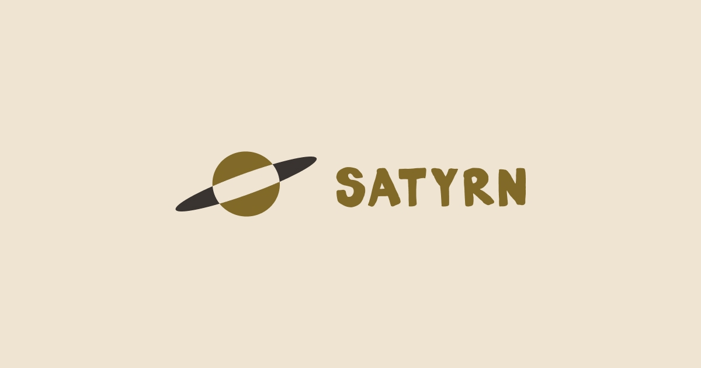
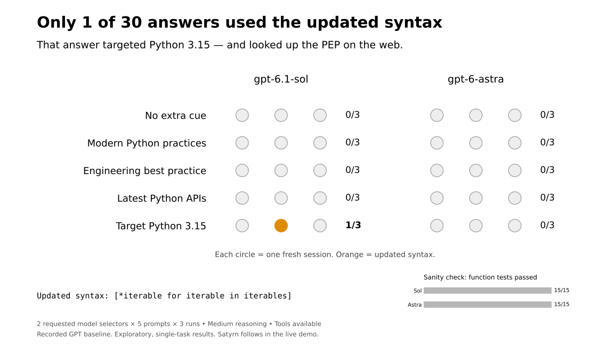

Say hi 👋
to Satyrn
Laura Summers
satyrn.ai
July 2026. EuroPython.
Paul Everitt sets a challenge:
Can we build a model that knows Python 3.15
by October?
“How spicy should I go?”
EuroPython. A mutual friend.
A conversation before the keynote.
It spoke to something
I was feeling.
Disempowered. Disillusioned.
A little adrift.
And then: something positive
to focus on.
A simple mark. A lot of ideas.

Community, Python’s scientific roots, and a nod to Jupyter.
People got to work.
- Paul: Pi, the Engine, and evals.
- Michał and the models team:
training infrastructure and Python datasets. - Brand, website, education, community.
A lot of false starts.
“Today’s the day.”
Then another overnight eval.
Another flaw. Another restart.
The fine-tuning work kept moving.
We pulled it off.*
*well, sorta*
- Python fine-tunes and a training pipeline.
- An experimental Engine and eval harness.
- A community with something to build on.
What lives where?
Small models. Current Python.
Fine-tuning existing open-weight models.
The GPT baseline
Same flattening task. Five prompt variants.
- No extra cue
- Modern Python practices
- Engineering best practice
- Latest Python APIs
- Target Python 3.15
Two requested model selectors × three fresh sessions each.

The interesting part is syntax choice.
“Target Python 3.15”
usually still produced older syntax.
The one updated answer used web retrieval.
GPT baseline: recorded runs.
Satyrn: the same prompt, live.
Now the same prompt, locally.
Ornith 1.5 9B
Satyrn Python 3.15 fine-tune
GPT baseline: recorded runs.
Satyrn: live demo in Ollama.
hf.co/satyrn-ai/Ornith-1.5-9B-py3.15:Q4_K_M
The prompt
Write a Python function that flattens an iterable of iterables into a single list.
Two valid answers
Established syntax
[item for iterable in iterables for item in iterable]
Python 3.15: unpacking in comprehensions
[*iterable for iterable in iterables]
Correctness and use of new syntax are separate questions.
Pi + Satyrn Engine
- A scoped task contract.
- Work in a separate Git worktree.
- A candidate patch and a receipt.
The Pi plugin lives inside the Engine repository.
One task. A reviewable patch.
/implement
Inspect the contract.
Let the local model work.
Review the returned change.
Does the Engine help it finish?
Delivered passing patches.
Same Ornith 1.5 9B. One task. 48,000 output tokens.
AI by us, for us.
SKILLS
KNOWLEDGE
COMMUNITY
Fine-tuning should be
something we can learn.
Make the process visible.
Share what works.
Help the next person try.
There’s room for you.
- Try a model and report what happened.
- Help with datasets, agents, or evals.
- Write docs. Teach. Design. Share.
- Bring a question and learn with us.
satyrn.ai/get-involved
Say hi.
satyrn.ai
Laura Summers
Questions?